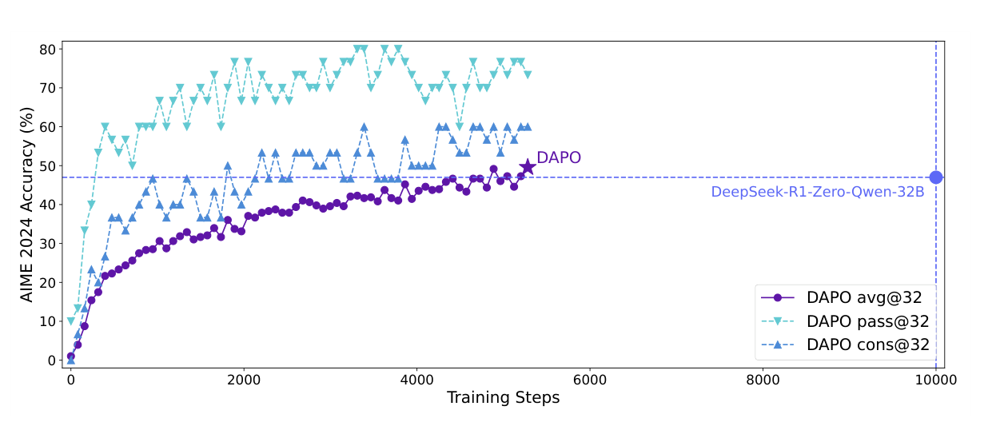
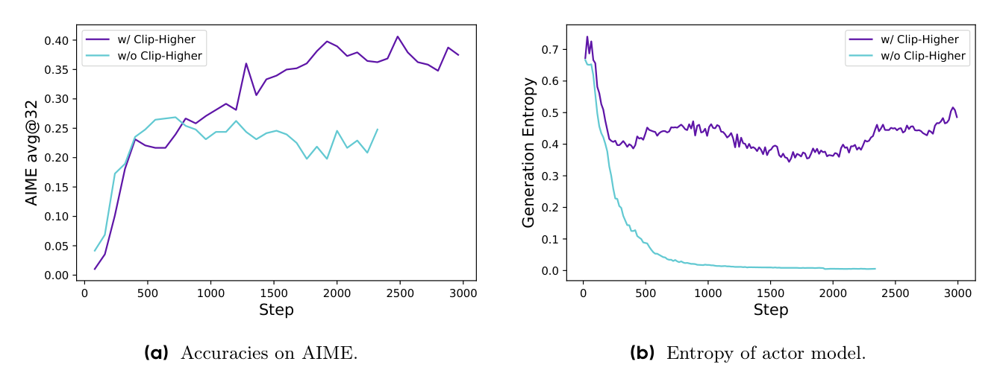
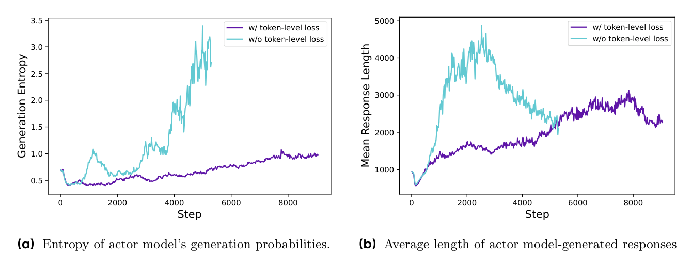
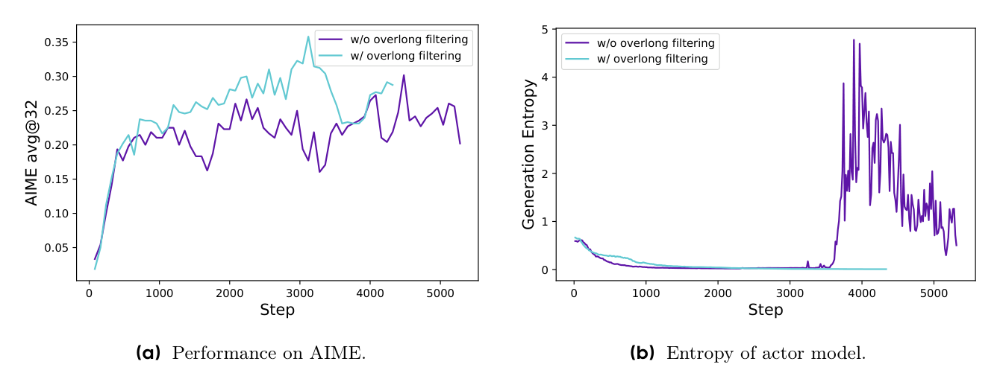

PAPER · 2025
DAPO
DAPO: An Open-Source LLM Reinforcement Learning System at Scale
针对大规模长思维链（Long-CoT）强化学习中朴素 GRPO 遭遇的熵坍缩、有效样本萎缩、长推导被稀释与截断噪声四大暗礁，提出「非对称放宽裁剪上界（Clip-Higher）+ 动态剔除零梯度题（Dynamic Sampling）+ 统一逐 Token 损失归约 + 线性软超长缓冲」四大机制，仅用一半步数实现 AIME 2024 突破 50 分的开源大规模 RL 系统。
一页看懂
02问题
复现 R1 时朴素 GRPO 仅得 30 分：对称裁剪使低概率长尾创新 token 无法增长引发熵坍缩；做对题增多导致全对题目零梯度吞噬 Batch；样本平均使长推导被稀释、复读不受罚；截断硬打负分误杀未完成的高质量思考。
方法
Clip-Higher 解耦裁剪（上界放宽至 1.28，下界守住 0.8）；动态采样过滤全对/全错零梯度题并补满 Batch；Token-level Loss 统筹字字平权；软超长线性过渡带缓冲；DAPO-Math-17K 整数标准化。
结果
Qwen2.5-32B 基座在 AIME 2024 从 30 分暴涨到 50 分，训练步数仅需 DeepSeek-R1-Zero 的 50%；不依赖 SFT 演示，纯规则 RL 下模型自发涌现出中途自我反思（Wait a moment...）与重算纠偏行为。

给极长长跑选手装上非对称剪刀与动态黄金题库：放宽油门上限、剔除无效白卷。
关键机制：Clip-Higher 与动态采样
03打破沿用数年的对称裁剪传统，将上界放宽到 1.28：

| 关键机制 | 朴素 GRPO 做法 | DAPO 创新重构 | 核心收益 |
|---|---|---|---|
| 裁剪区间 | 对称 [0.8, 1.2] | 非对称 [0.8, 1.28] | 下界守住采样防塌缩，上界给低概率创新 token 留下成倍成长空间 |
| 批次采样 | 固定 Batch 静态采样 | 动态剔除 Acc=0 与 Acc=1 的题目 | 彻底消灭零优势僵尸题目，确保反向传播每一步都是 100% 有效梯度 |
机制深入：Token-level 损失与软惩罚
04长推理下样本级平均（先除以长度 |o_i|）导致精妙长逻辑被稀释、长篇废话得不到严厉惩罚。DAPO 将分母提取到最外层：


证据与消融：四大技术的阶梯贡献
05在 Qwen2.5-32B 基座上逐项叠加技术，AIME 2024（avg@32）从 30 分一步步推至 50 分：
| 技术组合步骤 | AIME 2024 得分 | 步进收益 | 核心机制定位 |
|---|---|---|---|
| 朴素 GRPO 基准 | 30.0 | - | 基线遭遇严重熵坍缩与有效批次萎缩 |
| + 超长样本过滤（Overlong Filtering） | 36.0 | +6.0 | 消除未完成高质量推导的假负例噪声 |
| + 非对称裁剪（Clip-Higher） | 38.0 | +2.0 | 阻断策略熵断崖下跌，维持探索活力 |
| + 软超长惩罚（Soft Overlong Punishment） | 41.0 | +3.0 | 线性渐进惩罚，平滑长度过渡 |
| + Token-level 损失归约 | 42.0 | +1.0 | 按字计费，抑制低质复读膨胀 |
| + 动态重采样（Dynamic Sampling 全套） | 50.0 | +8.0 | 每步均为高信噪比更新，直接斩获最大飞跃 |
代价与适用边界：
- 动态采样推理吞吐压力：后期剔除率高，需要推理引擎支持极高并发与吞吐；
- 强依赖精确规则判定：通过 DAPO-Math-17K 强制转换成整数答案，在难以自动化判卷的开放生成任务上较难直接推广。
卡壳点与解答
06Q：为什么朴素对称 Clip 会引发熵坍缩？Clip-Higher 如何对症下药？
1. 对称 Clip 的非对称压制：低概率创新 token 想要脱颖而出，相对增长往往需要数倍（例如从 0.01 到 0.05 是 5 倍）；但 1.2 的上限直接扼杀了这种指数跃迁；而下限 0.8 却能持续有效压低坏动作。两者失衡导致策略熵断崖暴跌；
2. Clip-Higher 权衡：仅将上界放宽至 1.28，给低概率优秀 token 留出成长空间；下界严格守在 0.8 防止概率过度压制归零破坏动作空间。
Q：样本级平均与 Token 级平均在长思考链下的根本分歧是什么？
1. 样本级平均病态：单样本除以长度 |o_i|，导致 16K 长推导中每个 token 的梯度贡献被严重稀释；而一旦模型死循环复读，单 token 负惩罚同样被巨额分母稀释，纵容了废话膨胀；
2. Token 级平均拨乱反正：把分母移到最外层除以总有效 token 数。每个 token 权重完全均等，好字给足正奖励，复读注水字字受罚，从数学上根治了无惩罚刷长度。
Q：动态采样额外生成了数据，为什么整体训练时间反而更少？
1. 消灭无效空转：全对题目在 GRPO 下优势恒为零，硬塞进 Batch 只是占着显存放空炮，导致实际有效 Batch 萎缩 60%+；剔除后反向传播步数直接减少 50%；
2. 木桶效应掩盖耗时：分布式并行 Rollout 时间由最长长尾样本决定，等待长尾生成的空档异步多跑几次短题目并不会显著增加墙钟耗时。
关联与来源
07DeepSeekMath
算法源头与痛点修复：DeepSeekMath 提出了首个免 Critic 的 GRPO 算法，但在上万 token 长思维链下暴露了四大暗礁；DAPO 是针对 Long-CoT 的直接升级系统。
PPO
裁剪边界的非对称改造：PPO 确立了经典对称裁剪目标（1±ε），DAPO 首次针对长生成探索证明了非对称 Clip-Higher 在防范策略熵坍缩上的核心价值。
Open-MOPD
长度与预算失衡的同源对照：Open-MOPD 揭示长短回答 25× 差距会导致 token 梯度严重倾斜；DAPO 的 Token-level 损失同样是在处理长短序列梯度权重均等的本质问题。
- 完整笔记
- notes/papers/2025-dapo.html
- 源文件
wiki/papers/2025-dapo.md- Zotero 深链接
- zotero://select/items/QUHVNNHR（citekey:
yuDAPOOpenSourceLLM2025）